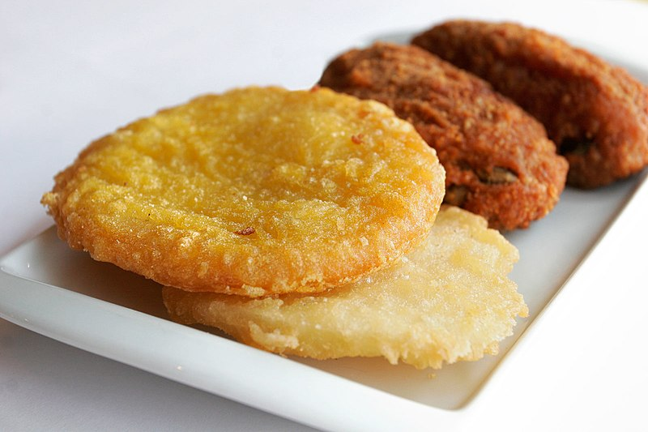

Potato Cakes

Description
A personal favourite for parties. Some batter and potatoes go a long way to feeding a crowd (even if it's not the most healthy option).
Ingredients
- 1/2 Cup of Plain Flour
- 1/2 Cup of Rice Flour
- 1-2 L of frying oil (depending on size of pot)
- A pinch of table salt
- Chicken salt to season
- 1/2 bottle of beer
- 4-5 potatoes (depending on size)
Instructions
- Mix together the flours, a pinch of salt and half a bottle of beer in a large bowl. Whisk with a fork until smooth consistency. Target consistency should be a little thinner than pancake batter. Adjust liquid volumes to suit.
- Thinly slice potatoes and pat dry with some paper towel.
- Place oil in a large pot and heat to around 200 degrees celcius
- Once oil is at temperature, take each slice of potato and dip in batter, then place in pot. Cook in batches of 4-5 until golden brown.
- Once each batch is cooked, place on paper towl to drain oil and toss in chicken salt. Eat while fresh.